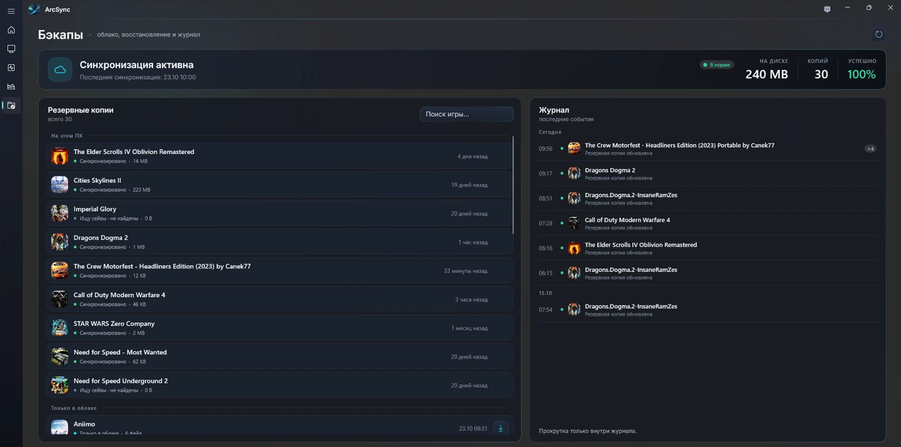
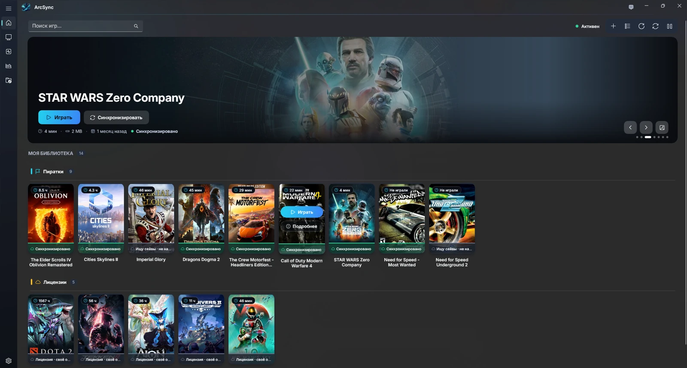
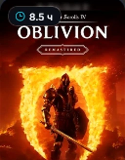
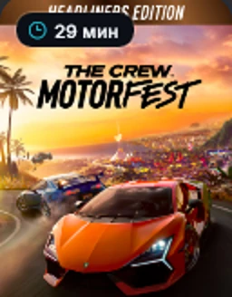
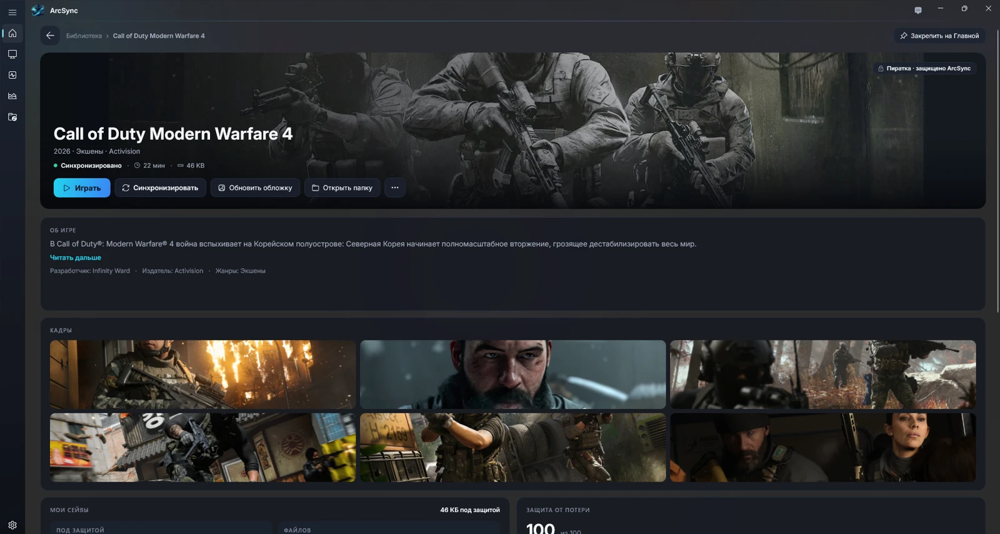

Находит сам.
Не нужно искать сейвы в AppData и Documents. ArcSync определяет папки сохранений.
ЛАУНЧЕР + ОБЛАЧНЫЕ СЕЙВЫ
Собери игры в одну библиотеку.
А сохранения доверь своему облаку —
ArcSync позаботится об остальном.
Бесплатно · Windows 10 / 11 · x64




01 / ИНТЕРФЕЙС
СОЗДАН ДЛЯ ИГРЫ. НЕ ДЛЯ РУТИНЫ.Не папка с ярлыками. Твоя игровая библиотека — с быстрым запуском, бэкапами и прогрессом на виду.
02 / НЕ ПРОСТО ЛАУНЧЕР
ПРОГРЕСС ВАЖНЕЕ ПАПОК.ArcSync находит сохранения и копирует их в выбранную облачную папку. Без аккаунта ArcSync, собственных серверов и подписки.
Настроить за три шагаНе нужно искать сейвы в AppData и Documents. ArcSync определяет папки сохранений.
Резервные копии и журнал синхронизаций — в интерфейсе. Верни сохранения на компьютер и продолжай играть.
Игры со своим облаком показываются отдельно — без дублирования синхронизации.

03 / ПРОДОЛЖАЙ ИГРАТЬ
Переустановка Windows или другой компьютер — не повод заново проходить любимую игру. Подключи ту же облачную папку и восстанови сохранения.
04 / НАЧАТЬ ПРОСТО
ОДНА НАСТРОЙКА. ДАЛЬШЕ — ИГРА.Скачай установщик из официального релиза на GitHub. Необходимая среда выполнения уже внутри.
OneDrive, Google Drive, Яндекс Диск или другая папка, которую синхронизирует твой облачный клиент.
ArcSync следит за сохранениями и обновляет копии. Библиотека и бэкапы — в одном приложении.
БЕЗ ЛИШНИХ ПОСРЕДНИКОВ
Сохранения отправляются в выбранную тобой папку, а не на серверы приложения.
Нет рекламных блоков, сбора статистики использования и обязательной регистрации в ArcSync.
Программа обновляет свои копии и не удаляет чужие файлы в облачной папке.
Идея похожа: копия прогресса доступна на другом компьютере. Но ArcSync использует твою облачную папку и помогает с играми, у которых нет собственной облачной синхронизации. Лицензии с собственным облаком показываются отдельно.
OneDrive, Google Drive, Яндекс Диск, Dropbox, MEGA, Nextcloud, Mail.ru — или другая локальная папка, которую синхронизирует облачный клиент. Клиент облака должен быть установлен, настроен и выполнять синхронизацию.
Windows 10 (сборка 19041 или новее) либо Windows 11, процессор x64, около 160 МБ места и права администратора. Необходимая среда выполнения включена в установщик.
Установщик не подписан платным сертификатом, поэтому SmartScreen может показать «Неизвестный издатель». Это не подтверждение безопасности файла: скачивай только официальный релиз и сравни SHA-256 с опубликованной контрольной суммой перед запуском.
Нет. Удалённая игра исчезает из установленной библиотеки, а сохранения остаются в резервных копиях и облаке.
Программа бесплатная, подписка ArcSync не требуется. Исходный код приложения не опубликован. Условия использования и распространения указаны в EULA на GitHub. Место в выбранном облаке предоставляется его провайдером на своих условиях.
ARCSYNC / ДЛЯ WINDOWS
Меньше папок. Меньше рутины. Больше игры.
Скачать бесплатно Windows 10 / 11 · x64 · официальный релиз на GitHub